¡Me encanta CSS!
GEMAS
Piedras Preciosas
Cristales
Una roca, mineral, vidrio o producto orgánico de origen natural, que al ser cortado o pulido se puede usar en la confección de joyas u objetos artísticos. Son piedras preciosas minerales como por ejemplo rubí, diamante, esmeralda, zafiro; semipreciosas como espinela, alejandrita, tanzanita o granate; vidrios naturales como la obsidiana; rocas como la malaquita, el lapislázuli o el ónix, productos fósiles de origen orgánico como el azabache o el ámbar y productos biogénicos como las perlas (producida por una ostra) o el coral (formado por la secreción calcárea de pequeños pólipos marinos).

| Nombre de Gemas | Chakra correspondiente | Precio |
| Cuarzo Verde | Chakra garganta | $800 |
| Celenita | Chakra corona | $900 |
| Verde | Rosa | Negra | Amarilla | |
|---|---|---|---|---|
Tipos |
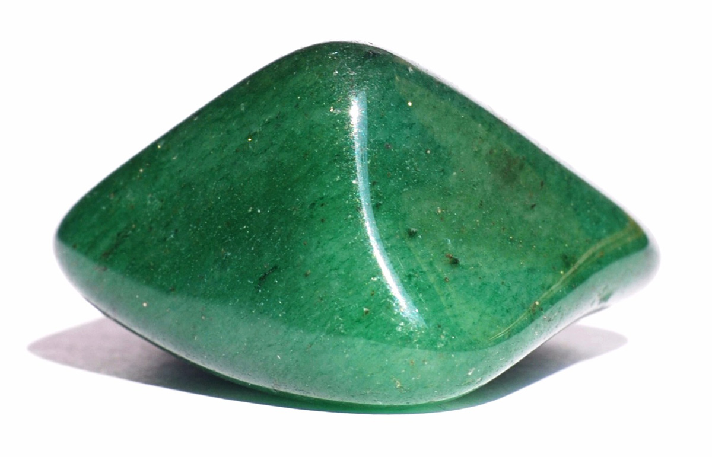Cuarzo Verde | 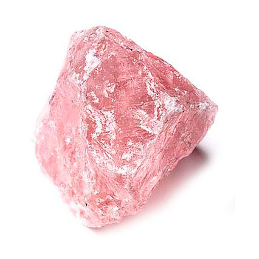Cuarzo Rosa | 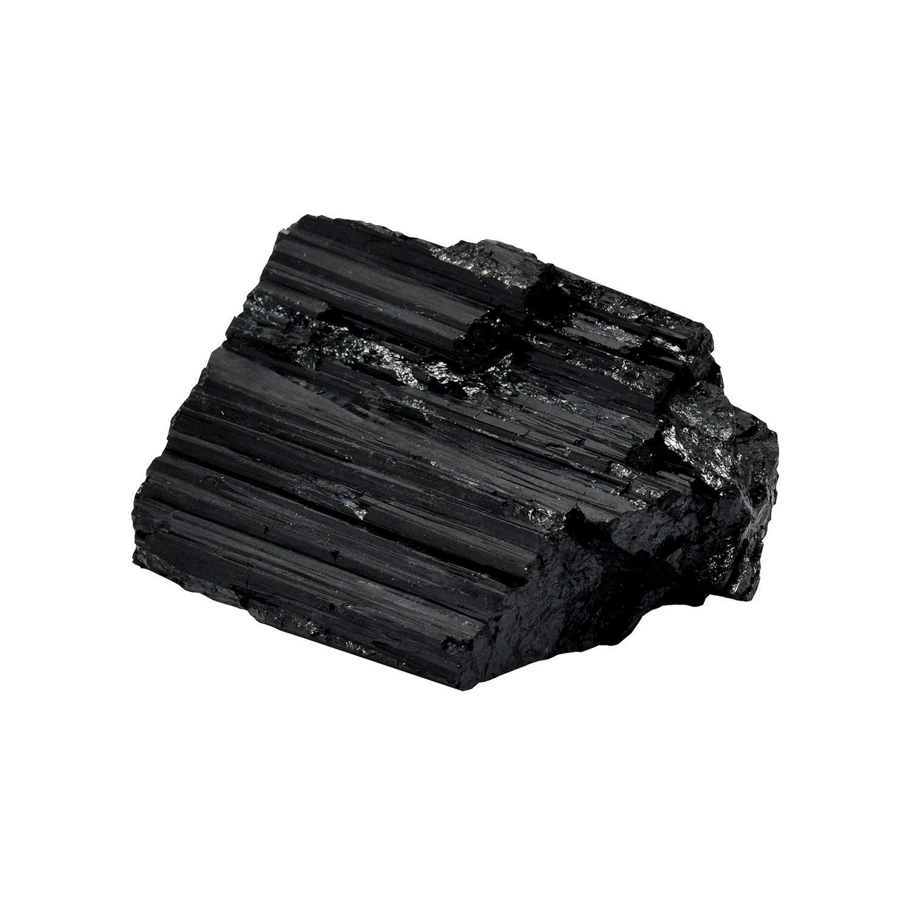Turmalina | 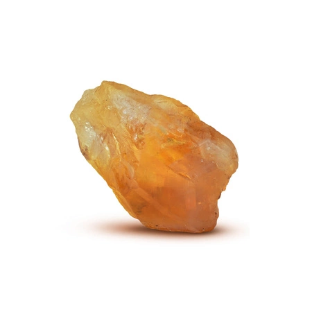Citrino |
| 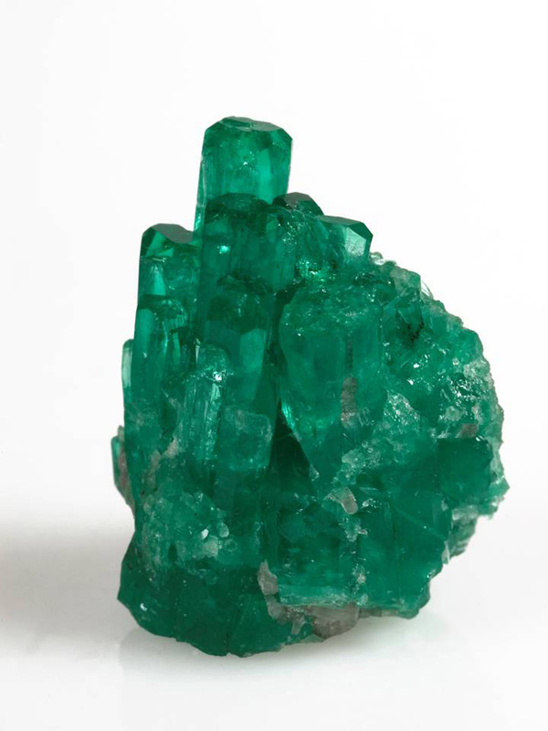 Esmeralda | 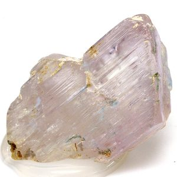Kunzita |  Onix Onix |
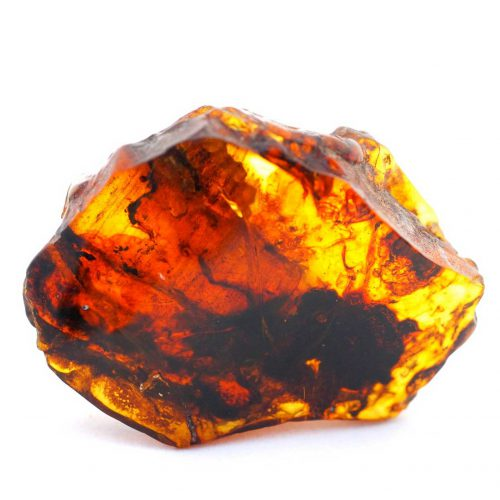Ámbar | |
| 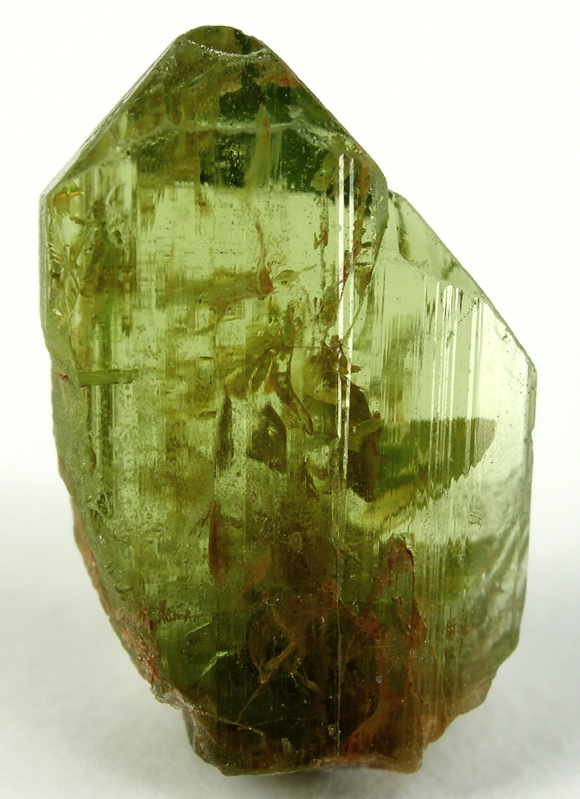Peridoto | 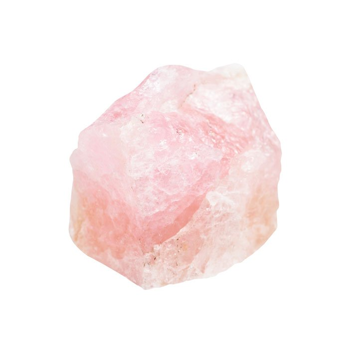Morganita | 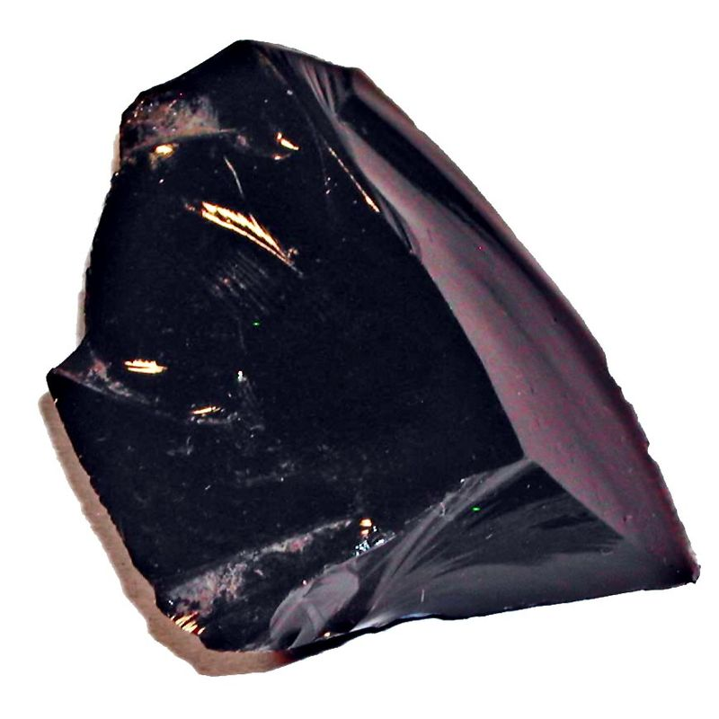Obsidiana | 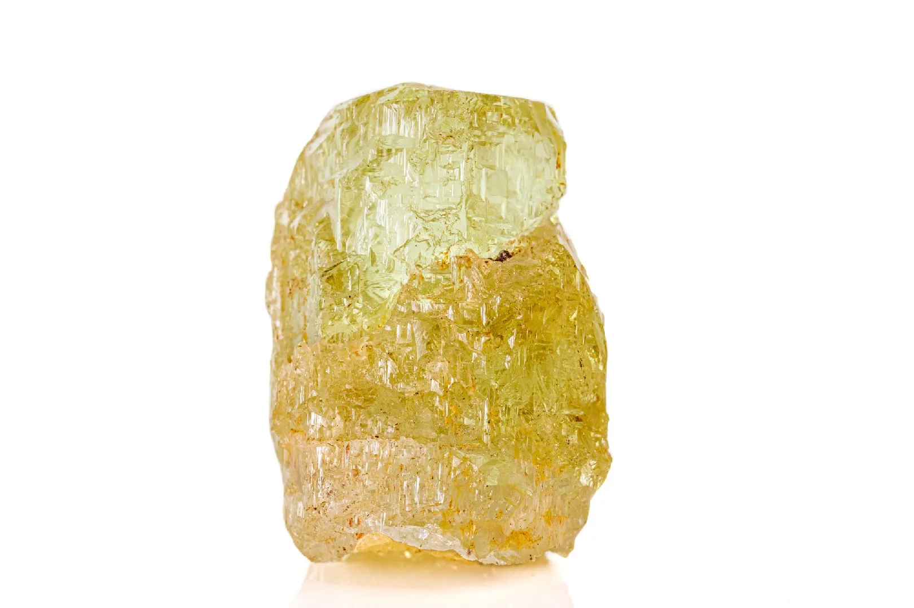Heliodoro | |
| Otros tipos | ||||
|
||||
| Colores según Chakras | ||||
|---|---|---|---|---|
INFORMACIÓN
Sobre la creadora
Soy María Parets y estoy aprendiendo a crear Sitios Web. Ésta es una prueba!